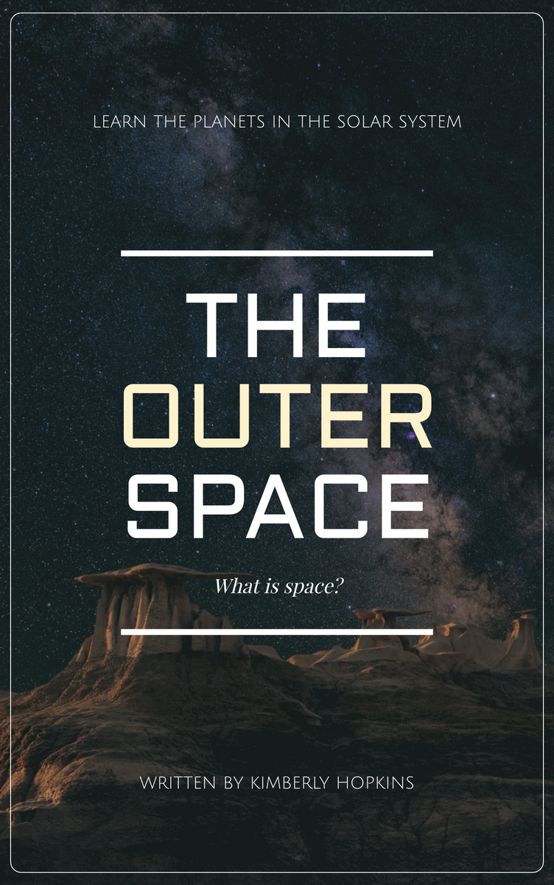
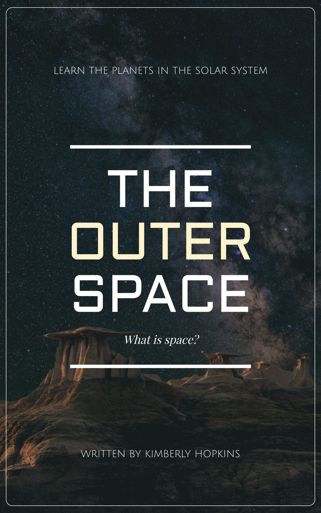

Welcome to LIBRARY THINGS Reviews, your go-to destination for insightful, detailed, and honest book reviews. Our mission is to guide you through the vast world of literature, helping you find your next great read.
Whether you're a fan of gripping thrillers, heartwarming romances, thought-provoking non-fiction, or any genre in between, we have something for everyone
At LIBRARY THINGS Reviews, we cover an extensive range of genres to cater to all reading preferences. Whether you’re into gripping thrillers, heartwarming romances, thought-provoking non-fiction, fascinating science fiction, enchanting fantasy, or profound literary fiction, you’ll find something here to pique your interest.
Our website is easy to use. We've organized it so you can find reviews by genre, author, or rating. This means you can quickly find the best books in your favorite category or discover something new. We also have a section for new releases, so you can keep up with the latest books everyone is talking about.
Our reviews go beyond surface-level summaries. We explore themes, characters, plot intricacies, and the overall impact of the book. This ensures you get a thorough understanding of what to expect before you dive in. Integrity is at the heart of what we do. Our reviewers provide candid feedback, highlighting both strengths and weaknesses, so you can trust the recommendations you receive.
At LIBRARY THINGS Reviews, we believe in fostering a community of book lovers, encouraging discussions, and sharing the joy of reading. Discover new authors, revisit classics, and explore diverse perspectives with us. Happy reading!